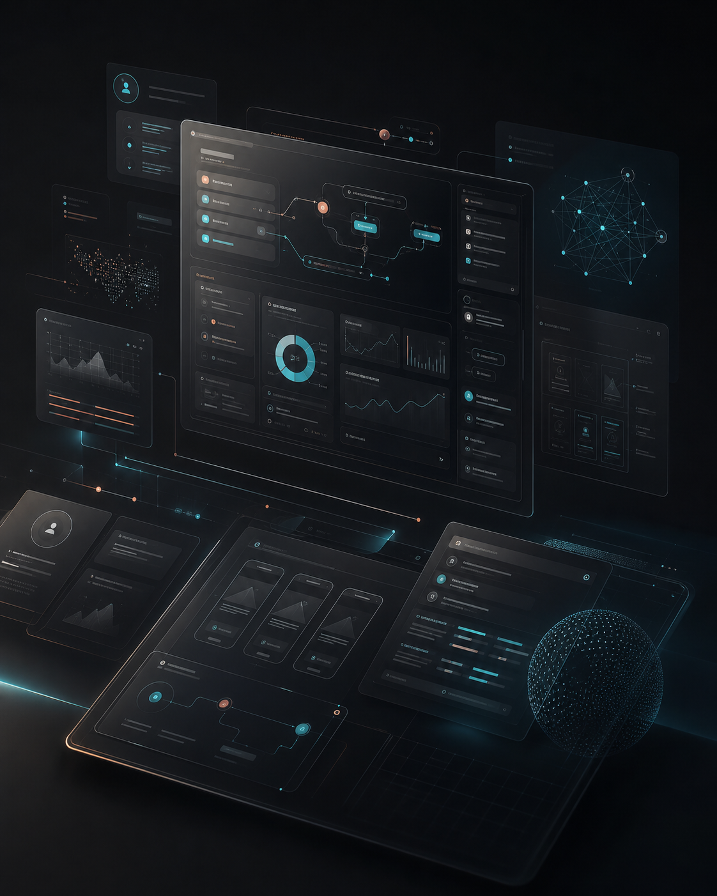

需求拆解
我把业务目标、用户任务和限制条件讲清楚，Codex 帮我梳理页面层级、功能边界和遗漏风险。
UI/UX Designer · Product Thinking · AI Experience
UI/UX designer focused on product clarity, AI experience, and scalable design systems.
我擅长把复杂需求转化为清晰结构，在产品判断、AI 协作和高质量界面交付之间建立稳定闭环。
面对设计负责人，我可以讲清设计判断；面对业务与创业团队，我能把目标拆成路径； 面对 AI 产品，我会把模型能力、用户心智和可解释反馈放在同一个体验系统里思考。
从用户场景、业务指标、信息架构到转化路径，建立可验证的设计判断。
设计提示、结果反馈、人工校正、信任机制和复杂状态下的人机协作流程。
用克制的视觉语言、组件规则和动效节奏，让产品看起来高级且可持续扩展。
Selected Work
Designer × Codex
我与 Codex 的协作重点不是“让 AI 替我设计”，而是用它快速展开结构、生成可验证方案、 推进原型实现，再由我完成体验判断、视觉取舍和交付把控。
判断问题、拆解任务、建立体验目标，并决定什么值得保留。
生成结构、补齐代码、检查状态，并把想法变成可运行的版本。
我把业务目标、用户任务和限制条件讲清楚，Codex 帮我梳理页面层级、功能边界和遗漏风险。
通过多轮提示快速得到信息架构、文案、组件组合和交互路径，再由我筛选出更符合产品语境的方向。
Codex 将设计想法转成可运行页面，我继续校准视觉密度、响应式体验、状态反馈和真实使用节奏。
我用截图、走查和评审判断质量，Codex 辅助修复细节、整理说明，让交付更稳定。

AI Product DesignAbout
我适合参与需要清晰思考和高质量交付的项目：复杂后台、消费级体验、AI 功能落地、 从 0 到 1 的产品验证、增长转化优化，以及需要建立统一设计语言的团队。
AI Toolkit
从需求拆解、视觉探索、文案整理到原型实现，用合适的 AI 工具把重复执行压缩，把判断留给设计师。
Method
梳理用户、业务、约束和成功指标，先判断真正要解决的问题。
建立任务路径、页面模型、信息优先级和关键状态，降低复杂度。
完成交互、视觉、动效与组件规则，让方案兼顾高级感和可落地性。
通过原型、评审、标注和规范，帮助团队稳定实现并持续迭代。